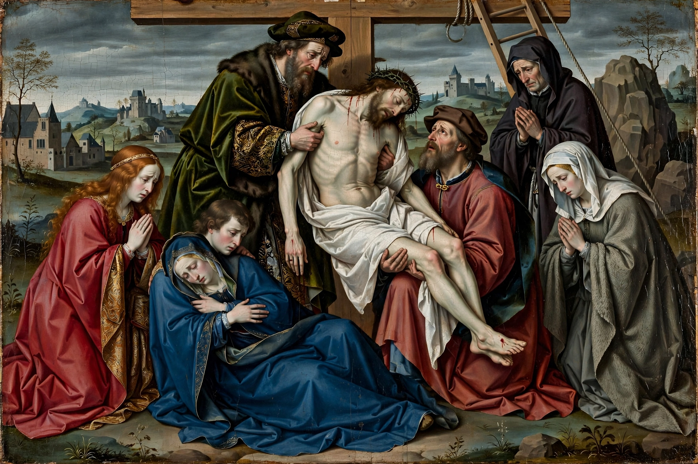

| Born | c. 1399/1400, Tournai |
|---|---|
| Died | 18 June 1464, Brussels |
| Known for | Early Netherlandish painting |
| Notable work | The Descent from the Cross, Beaune Altarpiece |
Rogier van der Weyden (c. 1399 or 1400 – 18 June 1464), initially named Rogier de le Pasture, was an early Netherlandish painter whose surviving works consist mainly of religious triptychs, altarpieces, and commissioned portraits. Along with Jan van Eyck, he is considered one of the founders of Early Netherlandish painting.
Apprenticed, probably to Robert Campin, he became a master in Tournai in 1432 and city painter of Brussels in 1435. He travelled to Italy in 1450, where his emotional style influenced Italian artists.
Masterpieces include The Descent from the Cross (c. 1435, Prado), the Beaune Altarpiece (Last Judgment), the Columba Altarpiece, and portraits of Philip the Good and Charles the Bold. His work is characterised by intense grief, elegant elongated figures, and meticulous oil technique.
Compare later styles: Rococo.